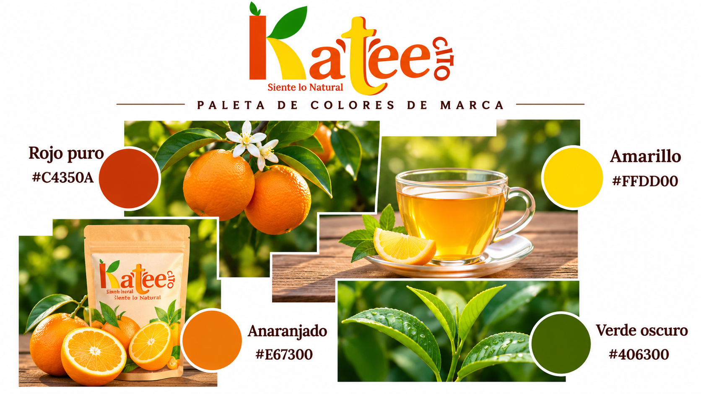
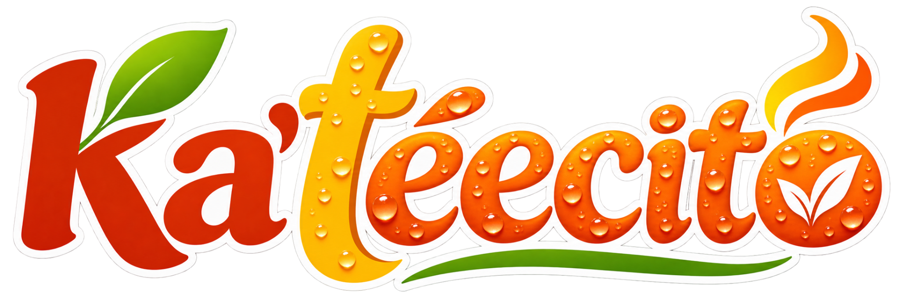

Imagología
Construye una imagen reconocible mediante el logotipo, colores, productos, atención y presencia pública.
La esencia de Ka’téecito se expresa en cada palabra: una voz natural, fresca y cercana que conecta el té cítrico con nuestra Selva Central.
 Propuesta de tipografía expresiva
Propuesta de tipografía expresiva
La identidad de marca de Ka’téecito integra tres dimensiones: cómo la perciben los consumidores, qué significan sus símbolos y cómo se comunica mediante palabras.
Construye una imagen reconocible mediante el logotipo, colores, productos, atención y presencia pública.
Interpreta la taza, el vapor, las hojas y las formas orgánicas que representan la experiencia del té.
Expresa la personalidad de la marca con su nombre, eslogan, mensajes y tono comunicativo.
Ka’téecito busca proyectar una imagen natural, fresca, confiable, cercana y vinculada a los frutos cítricos de la Selva Central. Su producto es té en polvo para preparar bebidas.
El uso consistente de la paleta y de imágenes de té, cítricos y naturaleza favorece el reconocimiento.

El símbolo complementario representa el consumo del té y su relación con la naturaleza. No sustituye al logotipo oficial de Ka’téecito.
La imagen verbal reúne palabras, frases, mensajes y expresiones que dan personalidad a una marca. En Ka’téecito comunica el origen regional, el sabor cítrico y la experiencia de disfrutar el té.

“Siente lo Natural”
Una invitación a conocer los sabores cítricos y la frescura asociada a la naturaleza. Su uso continuo refuerza el recuerdo y la identidad verbal de la marca.
| Elemento | Propuesta para Ka’téecito |
|---|---|
| Aplicación | Nombre comercial, eslogan, etiquetas, publicidad, sitio web, redes sociales y atención al cliente. |
| Objetivo | Comunicar una identidad coherente, memorable y cercana. |
| Nombre | Ka’téecito (marca) · Ka’téecito S.A.C. (denominación empresarial). |
| Eslogan | “Siente lo Natural”. |
| Tono comunicativo | Cálido, cercano, amable, fresco, sencillo, respetuoso e informativo. |
| Palabras clave | Té, cítricos, Selva Central, frescura, sabor, origen, naturaleza, cercanía y calidad. |
| Tipografía de marca | Century751 No2 BT en el nombre, Candara en «cito» y Geometr212 BkCn BT en el eslogan, según la ficha. |
| Estilo verbal | Directo, positivo y sensorial; explicar siempre que el producto se presenta en polvo para preparar té. |
Selecciona un canal para ver cómo se adapta la comunicación sin perder naturalidad ni claridad.
Mensajes breves y positivos que inviten a conocer los sabores cítricos, la marca y sus formas de preparación.
Ejemplos listos para presentar y adaptar a piezas gráficas. Puedes copiar cada mensaje.
Que Ka’téecito sea reconocible por lo que muestra, lo que simboliza y lo que dice. La combinación de imagología, iconología e imagen verbal fortalece la asociación con naturalidad, frescura, sabor cítrico y confianza en todos sus puntos de contacto.